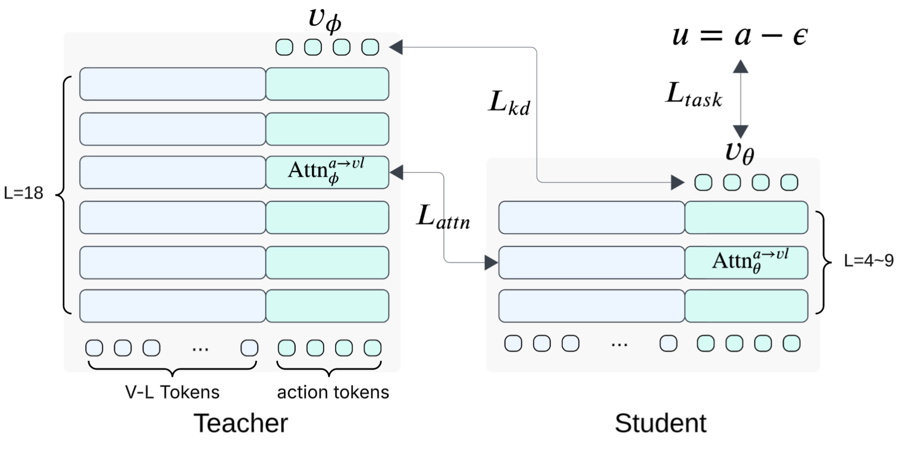

Why Go Shallow?
Flow cost≈
Nsteps×
Ctokens×
Ldepth
NstepsStep reduction mostly shortens the small diffusion policy head.
CtokensGPU parallelism already helps; aggressive image-token pruning is risky for precision tasks.
LdepthSequential and hard to parallelize; it scales VLM and policy-head parameters.
Previous Methods for Shallow VLA
Layer skippingmanual thresholds, task-dependent rules
Learned selectorsextra routing, training and inference complexity
Can we make it simple and automatic?Make a shallow student directly, then recover capability with knowledge distillation.
Shallow-π Is Surprisingly Simple

1. Make the student shallow Uniformly subsample layers in both the VLM backbone and action head.
2. Learn task loss Supervise the student with ground-truth flow velocity. \(L_{\mathrm{task}}=\mathbb{E}[\lVert v_\theta(\cdot)-u\rVert_2^2]\)
3. Mimic teacher denoising Match the teacher's predicted velocity. \(L_{\mathrm{kd}}=\mathbb{E}[\lVert v_\theta(\cdot)-v_\phi(\cdot)\rVert_2^2]\)
4. Distill attention Match middle-layer action-to-VL attention. \(L_{\mathrm{attn}}=\mathbb{E}[\mathrm{KL}(\mathrm{Attn}_{\phi}^{a\to vl}\Vert\mathrm{Attn}_{\theta}^{a\to vl})]\)
That's it.
No learned layer selector.
No manual inference threshold.
No modified inference pipeline.
Ablation: each distillation term contributes, and middle-layer action attention is the strongest target.
Loss design
| \(L_{\mathrm{task}}\) | \(L_{\mathrm{kd}}\) | \(L_{\mathrm{attn}}\) | L9 | L6 | L4 |
|---|
| ✓ | ✗ | ✗ | 95.4 | 93.0 | 92.3 |
| ✓ | ✓ | ✗ | 96.2 | 93.9 | 93.9 |
| ✓ | ✓ | ✓ | 96.8 | 94.6 | 94.2 |
Attention layer
| L9 | L6 | L4 |
|---|
| Initial | 94.4 | 93.9 | 91.0 |
| Middle | 96.8 | 94.6 | 94.2 |
| Later | 95.6 | 94.1 | 92.8 |
Attention target
| L9 | L6 | L4 |
|---|
| Action only | 96.8 | 94.6 | 93.9 |
| All tokens | 0.0 | 61.5 | 0.0 |
Just Benchmark (LIBERO)
Layer distillation moves models toward the upper-left: high success with lower CUDA time and fewer FLOPs.
Bubble size encodes FLOPs. Layer-distilled variants keep teacher-level success while cutting CUDA time.
Baseline
Token compression
Small backbone
Layer distillation